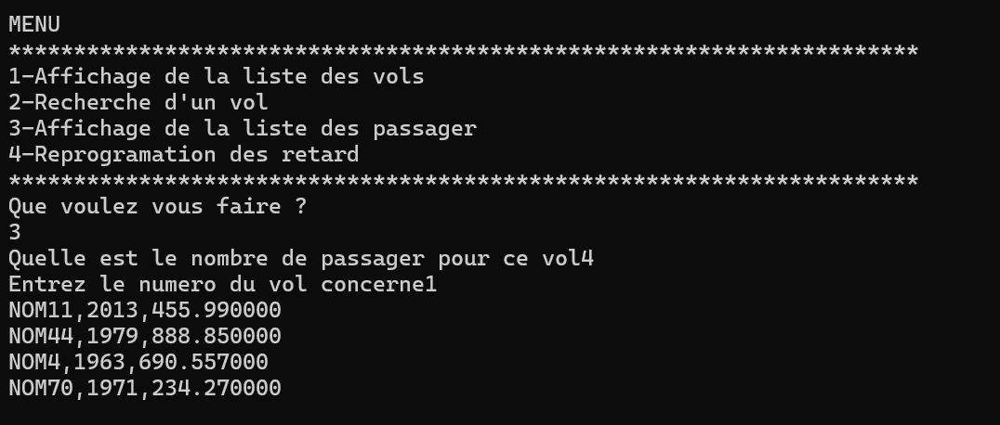
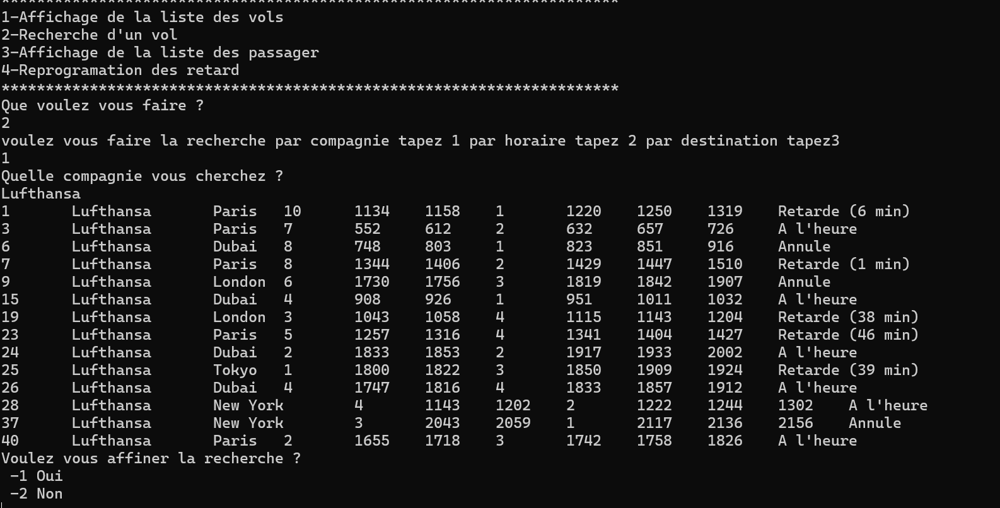

Introduction au projet
Le projet GESTION’AIR est une application développée en langage C qui vise à moderniser la gestion des vols commerciaux à l'aéroport Grenoble Alpes Isère. Elle permet de suivre en temps réel les informations relatives aux vols, d’optimiser l’utilisation des pistes et d’améliorer la coordination des services.

Description détaillée
Ce projet a pour but d’offrir une solution complète pour la gestion des vols commerciaux. Il intègre diverses fonctionnalités essentielles telles que l’affichage dynamique des horaires, la recherche précise par compagnie, destination ou heure de décollage, ainsi que la gestion des retards et des annulations.
L’interface a été pensée pour être intuitive et ergonomique. Grâce à des tableaux clairs et des filtres de recherche performants, l’utilisateur peut accéder facilement aux informations dont il a besoin. Une analyse algorithmique vient renforcer les performances en optimisant l’utilisation de la piste et en facilitant la répartition des passagers dans les salles d’embarquement.

Affichage dynamique des vols

Moteur de recherche par critères
Consignes et détails techniques
Sujet : Gestion des vols pour un aérodrome – Projet GESTION’AIR.
Le directeur de l'aéroport Grenoble Alpes Isère souhaite une application complète intégrant plusieurs fonctionnalités :
- Affichage des informations sur les vols via des tableaux dédiés.
- Recherche d’un vol par compagnie, destination ou heure de décollage.
- Affichage de la liste des passagers dans les salles d’embarquement.
- Gestion en temps réel des retards et des annulations.
- Optimisation de l’utilisation de la piste pour les décollages.
Chaque vol comporte des informations précises (numéro, compagnie, destination, comptoir d’enregistrement, horaires d’embarquement et de décollage, etc.), tandis que la gestion des passagers inclut des détails tels que le nom, le prénom, la date de naissance et le numéro du siège.
Téléchargement du projet
Pour consulter l’intégralité du code source et tester l’application, vous pouvez télécharger le projet au format ZIP.
Télécharger le projet (ZIP)